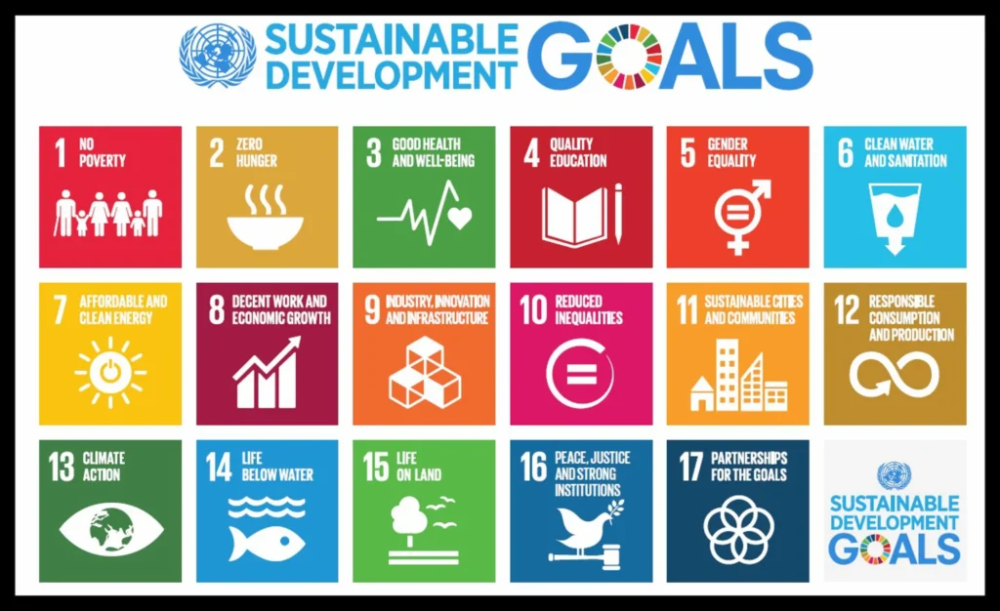
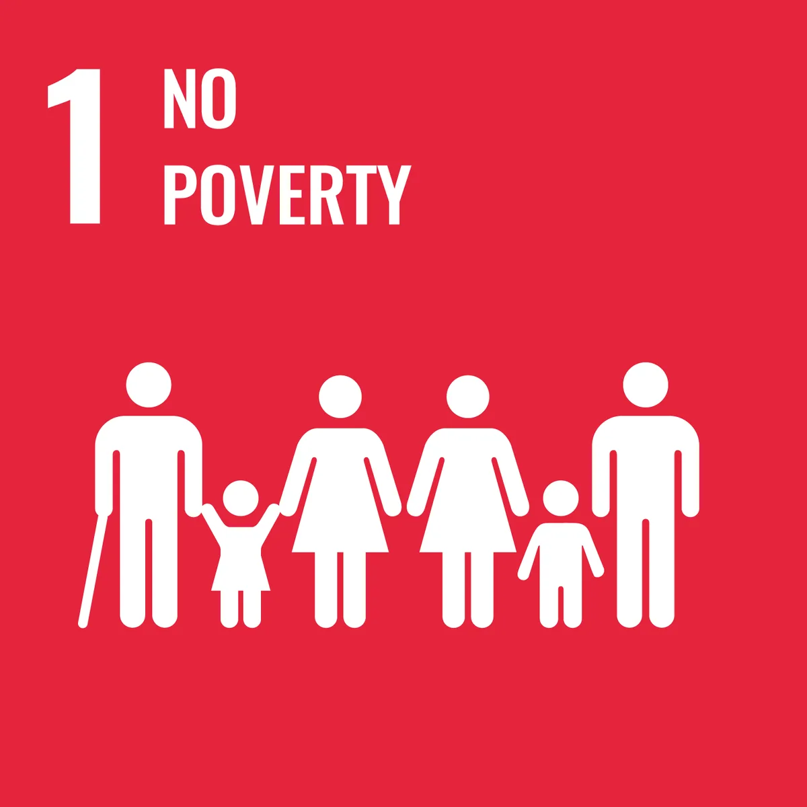
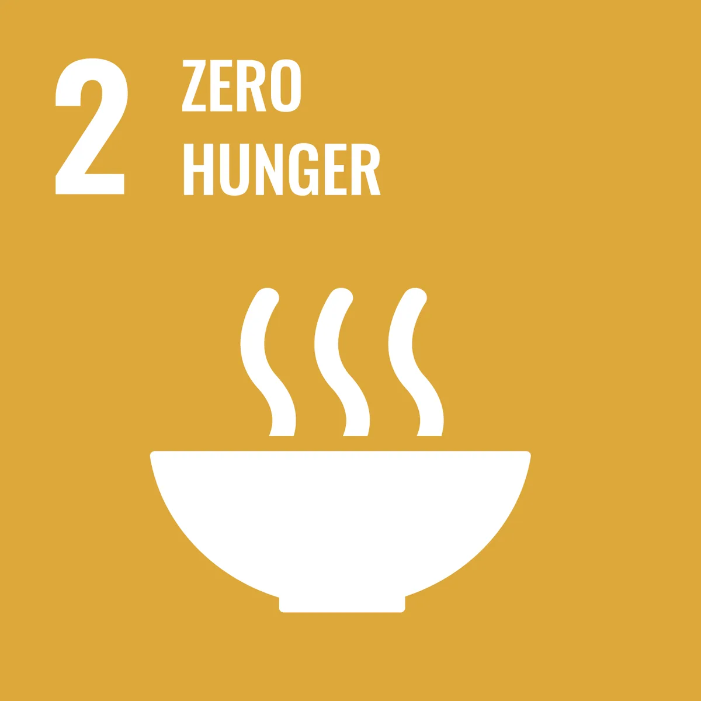
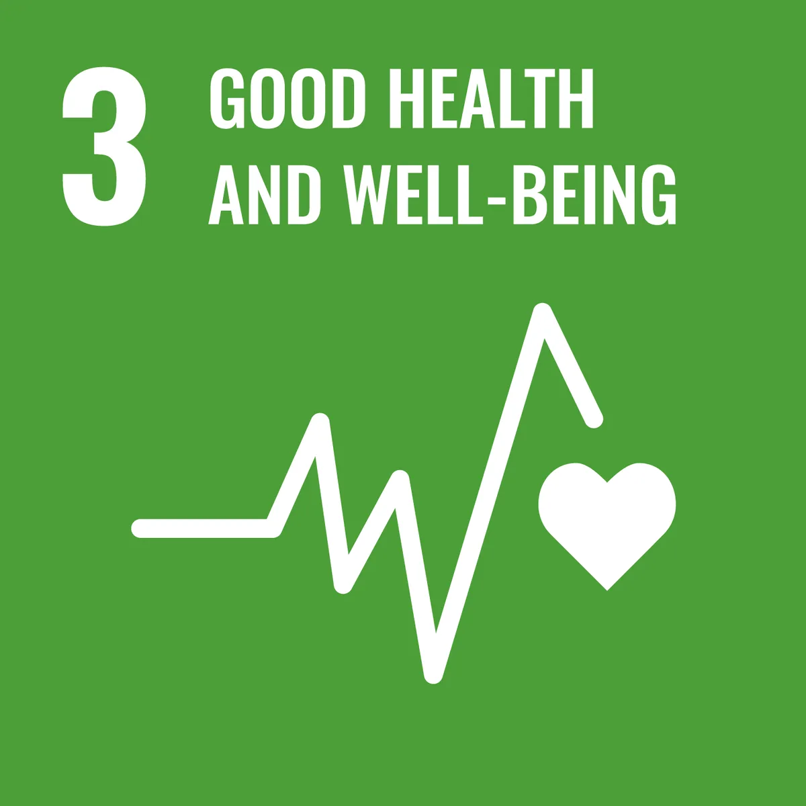
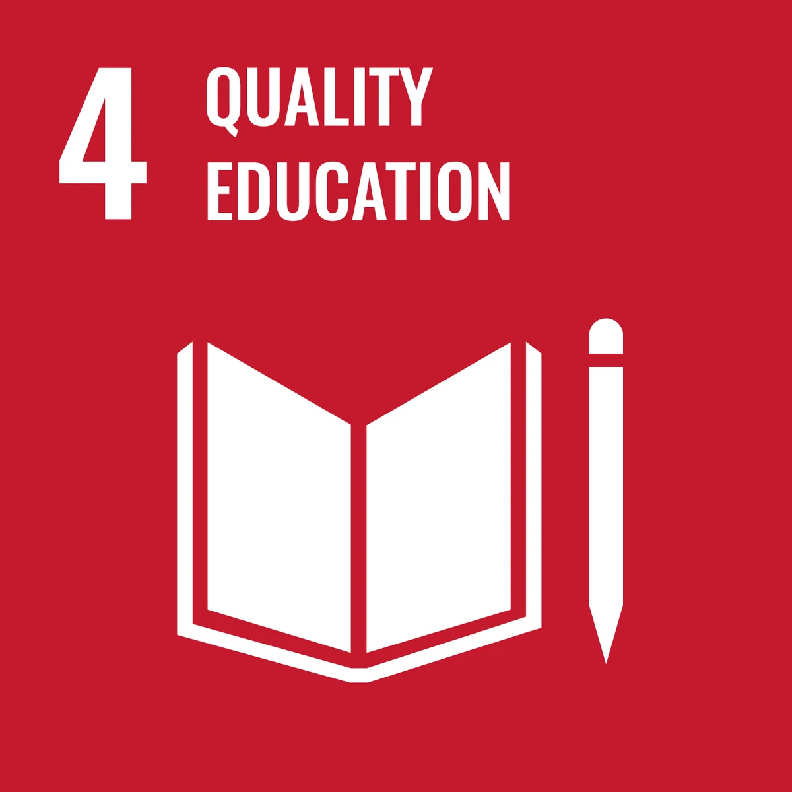
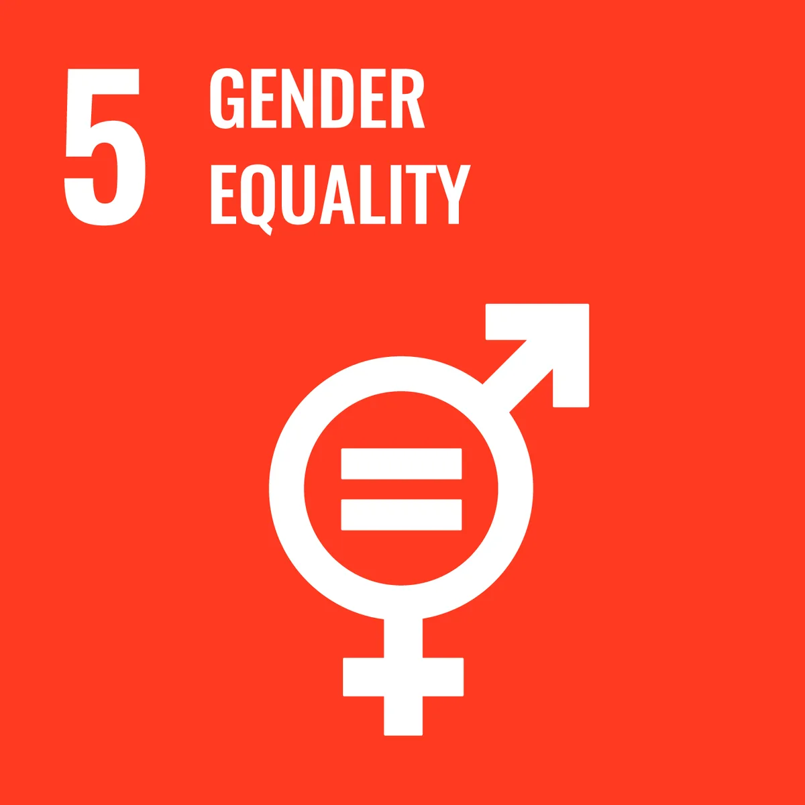
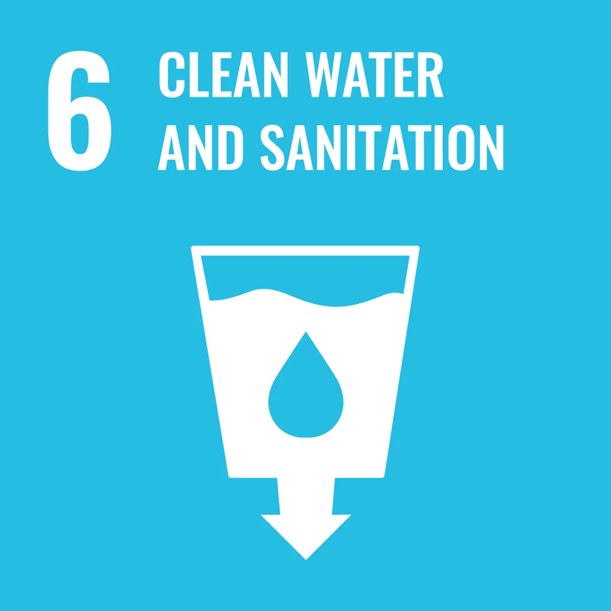
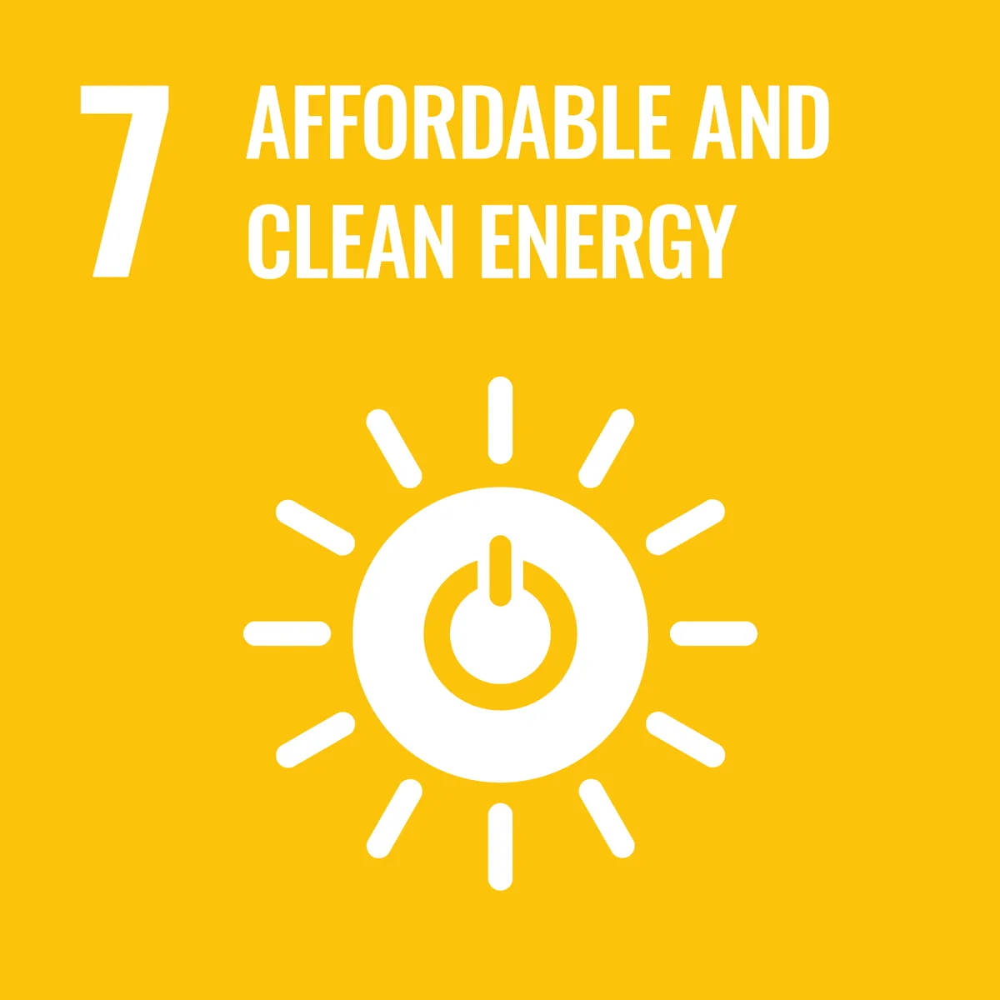

Expanded Nursing Uganda Explanation
Sustainable Development Goals (SDG’s) should be understood beyond a short definition. Link the concept to patient history, focused assessment, common risks, nursing priorities, documentation and evaluation of outcomes.
01 **SUSTAINABLE DEVELOPMENT GOALS (SDGS)**
Sustainable Development Goals (SDGs), also known as the Global Goals, were adopted by the United Nations in 2015 as a universal call to action to end poverty, protect the planet, and ensure that by 2030 all people enjoy peace and prosperity.
- The 17 SDGs are integrated—they recognize that action in one area will affect outcomes in others, and that development must balance social, economic and environmental sustainability.
- NO POVERTY
- ZERO HUNGER
- GOOD HEALTH AND WELL-BEING
- QUALITY EDUCATION
- GENDER EQUALITY
- CLEAN WATER AND SANITATION
- AFFORDABLE AND CLEAN ENERGY
- DECENT WORK AND ECONOMIC GROWTH
- INDUSTRY, INNOVATION AND INFRASTRUCTURE
- REDUCED INEQUALITIES
- SUSTAINABLE CITIES AND COMMUNITIES
- RESPONSIBLE CONSUMPTION AND PRODUCTION
- CLIMATE ACTION
- LIFE BELOW WATER
- LIFE ON LAND
- PEACE, JUSTICE AND STRONG INSTITUTIONS
- PARTNERSHIPS FOR THE GOALS
02 The Sustainable Development Goals (SDGs)
The Sustainable Development Goals (SDGs) , also known as the Global Goals , are a universal call to action to end poverty, protect the planet, and ensure that by 2030 all people enjoy peace and prosperity .
They were adopted by all UN Member States in 2015 as part of the 2030 Agenda for Sustainable Development, which sets out a 15-year plan to achieve the goals. The SDGs build on the success of the Millennium Development Goals (MDGs) , but unlike the MDGs, they are universal and apply to all countries, not just developing ones.
03 Key Characteristics of the SDGs:
- 17 Goals and 169 Targets : The SDGs are composed of 17 interconnected goals and 169 specific targets.
- Universal Applicability : They apply to all countries, rich and poor, emphasizing a shared global responsibility.
- Integrated and Indivisible : The goals recognize that ending poverty must go hand-in-hand with strategies that build economic growth and address a range of social needs, while tackling climate change and environmental protection.
- Leave No One Behind : A core principle of the SDGs is the commitment to ensure that the most vulnerable and marginalized populations are prioritized.
- Partnership : Achieving the goals requires a strong global partnership among governments, the private sector, civil society, and citizens.
04 The 17 Sustainable Development Goals:
- No Poverty : End poverty in all its forms everywhere.
- Zero Hunger : End hunger, achieve food security and improved nutrition, and promote sustainable agriculture.
- Good Health and Well-being : Ensure healthy lives and promote well-being for all at all ages.
- Quality Education : Ensure inclusive and equitable quality education and promote lifelong learning opportunities for all.
- Gender Equality : Achieve gender equality and empower all women and girls.
- Clean Water and Sanitation : Ensure availability and sustainable management of water and sanitation for all.
- Affordable and Clean Energy : Ensure access to affordable, reliable, sustainable, and modern energy for all.
- Decent Work and Economic Growth : Promote sustained, inclusive, and sustainable economic growth, full and productive employment, and decent work for all.
- Industry, Innovation, and Infrastructure : Build resilient infrastructure, promote inclusive and sustainable industrialization, and foster innovation.
- Reduced Inequalities ↔️: Reduce inequality within and among countries.
- Sustainable Cities and Communities : Make cities and human settlements inclusive, safe, resilient, and sustainable.
- Responsible Consumption and Production : Ensure sustainable consumption and production patterns.
- Climate Action : Take urgent action to combat climate change and its impacts.
- Life Below Water : Conserve and sustainably use the oceans, seas, and marine resources for sustainable development.
- Life on Land : Protect, restore, and promote sustainable use of terrestrial ecosystems, sustainably manage forests, combat desertification, halt and reverse land degradation, and halt biodiversity loss.
- Peace, Justice, and Strong Institutions : Promote peaceful and inclusive societies for sustainable development, provide access to justice for all, and build effective, accountable, and inclusive institutions at all levels.
- Partnerships for the Goals : Strengthen the means of implementation and revitalize the global partnership for sustainable development.
05 Mnemonic 1: The “We Can Do It” Story
Imagine a scenario where Poor people have No Food get Sick can’t go to School which particularly affects Girls . To fix this, they need Clean Water and Electricity . This leads to Decent Jobs in a new Factory that helps to Reduce Inequality . The factory is in a Sustainable City that practices Responsible Consumption . They also care about the Climate and the Ocean , and they protect the Forest . This peaceful and just city has Good Institutions and a strong Partnership to achieve all of these goals.
- Poor (Poverty)
- No Food (Zero Hunger)
- Sick (Good Health)
- School (Quality Education)
- Girls (Gender Equality)
- Clean Water (Clean Water and Sanitation)
- Electricity (Affordable and Clean Energy)
- Decent Jobs (Decent Work)
- Factory (Industry, Innovation, and Infrastructure)
- Reduce Inequality
- Sustainable City (Sustainable Cities)
- Responsible Consumption
- Climate
- Ocean (Life Below Water)
- Forest (Life on Land)
- Good Institutions (Peace, Justice, and Strong Institutions)
- Partnership
06 Mnemonic 2: The “C.H.E.E.S.E.Y” Acronym
This mnemonic divides the goals into a few categories to make them easier to remember.
Poverty & Basic Needs (Goals 1-6) :
- P overty & H unger: No Poverty, Zero Hunger
- H ealth & E ducation: Good Health, Quality Education
- G ender & W ater: Gender Equality, Clean Water
Economic & Infrastructural Goals (Goals 7-11) :
- E nergy & W ork: Affordable & Clean Energy, Decent Work
- I nfrastructure & I nequality: Industry, Innovation, & Infrastructure; Reduced Inequalities
- C ities: Sustainable Cities and Communities
Environmental & Global Goals (Goals 12-17) :
- R esponsible C onsumption: Responsible Consumption and Production
- C limate A ction: Climate Action
- L ife Below Water & L ife on Land
- P eace, J ustice, and Strong Institutions
- P artnerships for the Goals
07 Mnemonic 3: The “Simple Sentence” Mnemonic
This is a more direct, sentence-based mnemonic. It’s a bit long, but if you can remember the key words, it can be effective.
P eople H ave H ealthy E ducated G irls W ho E arn D ecent I ncome R educing I nequality in S ustainable C ities by C onserving C limate, O ceans, and L and, and promoting P eaceful P artnerships.
- P eople ( P overty)
- H ave ( H unger)
- H ealthy ( H ealth)
- E ducated ( E ducation)
- G irls ( G ender)
- W ho ( W ater)
- E arn ( E nergy)
- D ecent ( D ecent Work)
- I ncome ( I ndustry)
- R educing ( R educed Inequality)
- S ustainable ( S ustainable Cities)
- C onserving ( C onsumption)
- C limate ( C limate Action)
- O ceans ( O ceans)
- L and ( L ife on Land)
- P eaceful ( P eace)
- P artnerships ( P artnerships)
Goal 1: No Poverty
- Objective : To eliminate poverty in all its forms globally.
Targets :
- By 2030, halve the proportion of individuals, encompassing men, women, and children of all age groups, living in poverty across all dimensions as defined by national standards.
- Establish nationally appropriate social protection systems and measures for all citizens, incorporating basic safeguards, with the aim of achieving substantial coverage for the impoverished and vulnerable segments of society by 2030.
- Ensure equitable rights to economic resources for all, with special emphasis on the impoverished and vulnerable, guaranteeing access to fundamental services, land ownership, control over property, inheritance, natural resources, suitable innovative technologies, and financial services, including microfinance.
- Enhance the resilience of impoverished individuals and those in vulnerable circumstances by 2030, minimizing their susceptibility and exposure to climate-related extreme events and other economic, social, and environmental shocks and disasters.
- Mobilize significant resources from diverse origins, including bolstered development cooperation, to ensure adequate and foreseeable means for developing nations, notably the least developed countries, to execute programs and policies addressing multidimensional poverty.
- Establish robust policy frameworks at the national, regional, and international levels, grounded in development strategies that prioritize the welfare of the impoverished and are sensitive to gender concerns, to foster increased investment in actions aimed at eradicating poverty.
Goal 2
- ZERO HUNGER : End hunger; achieve food security, improved nutrition and promote sustainable agriculture
Goal targets
- By 2030, eliminate all manifestations of malnutrition, and achieve internationally agreed-upon benchmarks for reducing stunting and wasting in children under the age of 5 by 2025. Address the nutritional requirements of adolescent girls, pregnant and lactating women, and elderly individuals.
- Enhance the agricultural productivity and income of small-scale food producers, particularly women, indigenous communities, family farmers, pastoralists, and fishers. This entails providing secure and equitable access to land, productive resources, knowledge, financial services, markets, opportunities for value addition, and non-farm employment. This should be accomplished by 2030.
- Implement sustainable food production systems and adopt resilient agricultural practices that boost productivity and output. These practices should simultaneously uphold ecosystem integrity, enhance adaptive capacity to climate change, extreme weather, drought, flooding, and other disasters, and progressively enhance land and soil quality by 2030.
- Safeguard the genetic diversity of seeds, cultivated plants, domesticated animals, and related wild species. This involves maintaining well-managed and diversified seed and plant banks at national, regional, and international levels. Encourage equitable sharing of benefits arising from genetic resource utilization and associated traditional knowledge, adhering to international agreements.
- Increase investment, including bolstered international collaboration, in rural infrastructure, agricultural research, extension services, technology development, and seed and livestock gene banks. This will enhance agricultural productive capacity, particularly in developing nations, including the least developed countries.
- Rectify and prevent trade constraints and distortions in global agricultural markets, aligned with the Doha Development Round’s mandate. This encompasses the simultaneous elimination of agricultural export subsidies and equivalent measures that distort trade, fostering fair and competitive markets.
- Implement measures to ensure the effective functioning of food commodity markets and derivatives, and enable timely access to market information, including data on food reserves. This facilitates curbing extreme food price volatility.
Goal 3
- GOOD HEALTH AND WELL-BEING : Good health and well being . ensure healthy lives and promote well being for all at all ages.
Goal targets
- By 2030, reduce the global maternal mortality ratio to below 70 per 100,000 live births.
- By 2030, eradicate preventable deaths among newborns and children under the age of 5. All nations should strive to lower neonatal mortality to a minimum of 12 per 1,000 live births and under-5 mortality to at least 25 per 1,000 live births.
- Eliminate the epidemics of AIDS, tuberculosis, malaria, and neglected tropical diseases by 2030. Combat hepatitis, water-borne diseases, and other communicable diseases.
- By 2030, diminish premature mortality from non-communicable diseases by one third through prevention and treatment. Additionally, promote mental health and overall well-being.
- Strengthen the prevention and treatment of substance abuse, including narcotic drug misuse and harmful alcohol consumption.
- By 2020, cut in half the global number of deaths and injuries resulting from road traffic accidents.
- Ensure universal access to sexual and reproductive health-care services by 2030. This includes family planning, education, and the integration of reproductive health into national strategies and programs.
- Achieve universal health coverage encompassing financial risk protection and access to high-quality essential health-care services. Ensure availability of safe, effective, high-quality, and affordable essential medicines and vaccines for all.
- By 2030, substantially decrease deaths and illnesses caused by hazardous chemicals, air, water, and soil pollution and contamination.
- Enhance the enforcement of the World Health Organization Framework Convention on Tobacco Control in all countries as relevant.
- Support research and development of vaccines and medicines targeting communicable and noncommunicable diseases primarily affecting developing nations. Ensure access to affordable essential medicines and vaccines, complying with the Doha Declaration on the TRIPS Agreement and Public Health. This declaration affirms developing countries’ right to employ Trade Related Aspects of Intellectual Property Rights (TRIPS) flexibilities to safeguard public health.
- Considerably escalate health financing and bolster the recruitment, development, training, and retention of healthcare professionals in developing countries, particularly in the least developed countries and small island developing States.
- Reinforce the preparedness of all nations, especially developing ones, for early warning, risk reduction, and management of national and global health hazards.
Goal 4
- QUALITY EDUCATION : Quality education. Ensure inclusive and equitable quality education and promote life long learning opportunities for all.
Goal targets
- By 2030, guarantee that all boys and girls successfully complete free, fair, and excellent primary and secondary education, leading to significant and effective learning outcomes aligned with Goal 4.
- By 2030, provide every girl and boy access to quality early childhood development, care, and pre-primary education, equipping them for a smooth transition into primary education.
- By 2030, ensure unbiased access for both women and men to cost-effective, quality technical, vocational, and tertiary education, encompassing university-level studies.
- By 2030, substantially increase the number of young people and adults possessing relevant skills, including technical and vocational competencies, essential for securing employment, decent jobs, and entrepreneurial pursuits.
- By 2030, eliminate gender disparities in education and ensure equal access for vulnerable groups, including persons with disabilities, indigenous communities, and children in challenging circumstances, to all educational levels and vocational training.
- By 2030, ensure universal literacy and numeracy among youth and a substantial segment of adults, encompassing both men and women.
- By 2030, equip all learners with the knowledge and proficiencies essential for advancing sustainable development. This includes education on sustainable development, sustainable lifestyles, human rights, gender equality, promotion of peace and non-violence, global citizenship, and appreciation of cultural diversity and culture’s role in sustainable development.
- Develop and enhance education facilities that are sensitive to the needs of children, individuals with disabilities, and diverse genders, providing secure, nonviolent, comprehensive, and effective learning environments for all.
- By 2020, significantly augment global scholarship opportunities for enrollment in higher education, especially vocational training, information and communications technology, technical, engineering, and scientific programs in developed and other developing countries. Focus on least developed countries, small island developing states, and African nations.
- By 2030, substantially increase the supply of qualified educators, fostering international cooperation for teacher training in developing countries, with particular emphasis on the least developed nations.
Goal 5
- GENDER EQUALITY : Gender equality; achieve gender equality and empower all women and girls.
Goal targets
- Eradicate all forms of discrimination against women and girls, irrespective of their location.
- Eradicate all types of violence targeting women and girls in both public and private domains, including trafficking, sexual exploitation, and other forms of abuse.
- Eliminate harmful practices such as child, early, and forced marriage, as well as female genital mutilation.
- Acknowledge and value unpaid care and domestic labor. This involves offering public services, infrastructure, social protection policies, and encouraging shared responsibility within households and families as appropriate on a national level.
- Guarantee full and effective participation for women and equal leadership opportunities across all tiers of decision-making in political, economic, and public spheres.
- Ensure universal access to sexual and reproductive health services, including reproductive rights, as outlined by the Programme of Action of the International Conference on Population and Development and the Beijing Platform for Action, along with the outcomes of their review conferences.
- Implement reforms to establish equitable rights for women to economic resources, including land ownership, control over property, financial services, inheritance, and natural resources, in line with national laws.
- Enhance the utilization of enabling technology, particularly information and communications technology, to facilitate the empowerment of women.
- Establish and reinforce effective policies and enforceable legislation to promote gender equality and the empowerment of all women and girls across all levels.
Goal 6
- CLEAN WATER AND SANITATION : Clean water and sanitation; ensure availability and sustainable management of water and sanitation for all.
Goal targets
- By 2030, establish universal and fair access to safe and affordable drinking water for all.
- By 2030, achieve access to sufficient and just sanitation and hygiene facilities for everyone, ending open defecation, with particular emphasis on addressing the requirements of women, girls, and those in vulnerable circumstances.
- By 2030, enhance water quality by reducing pollution, eliminating improper waste disposal, and minimizing the release of hazardous chemicals and materials. Halve the proportion of untreated wastewater and significantly increase global recycling and safe reuse practices.
- By 2030, substantially improve water-use efficiency across all sectors. Ensure sustainable withdrawals and supply of freshwater to address water scarcity, significantly diminishing the number of people affected by water scarcity.
- By 2030, implement integrated water resources management at every level, incorporating transboundary cooperation as relevant.
- By 2020, safeguard and restore water-related ecosystems, including mountains, forests, wetlands, rivers, aquifers, and lakes.
- By 2030, amplify international collaboration and capacity-building assistance for developing nations in water- and sanitation-related endeavors and programs. This includes water harvesting, desalination, water efficiency, wastewater treatment, and recycling and reuse technologies.
- Promote and strengthen the participation of local communities in enhancing water and sanitation management.
Goal 7
- AFFORDABLE AND CLEAN ENERGY : Affordable and clean energy ensure access to affordable ,reliable, sustainable and modern energy for all.
Goal targets
- By 2030, guarantee universal access to energy services that are affordable, reliable, and modern.
- By 2030, significantly elevate the proportion of renewable energy within the global energy portfolio.
- By 2030, double the global pace of advancement in energy efficiency.
- By 2030, foster international collaboration to streamline access to research and technology for clean energy, including renewables, energy efficiency, and advanced, cleaner fossil-fuel technologies. Also, encourage investments in energy infrastructure and clean energy technology.
- By 2030, enhance infrastructure and modernize technology to facilitate the provision of sustainable and contemporary energy services for all developing nations, particularly least developed countries, small island developing states, and land-locked developing countries.
Goal 8
- DECENT WORK AND ECONOMIC GROWTH : Descent work and economic growth; promote sustainable economic growth and descent work for all .
Goal targets
- Sustain per capita economic growth in alignment with national circumstances, striving for a minimum of 7 percent annual gross domestic product growth in the least developed countries.
- Attain heightened levels of economic productivity through diversification, technological advancement, and innovation. Emphasis should be placed on high-value added and labor-intensive sectors.
- Advocate for development-focused policies that bolster productive activities, generate decent job opportunities, foster entrepreneurship, creativity, and innovation, and encourage the formalization and expansion of micro-, small-, and medium-sized enterprises, including facilitating access to financial services.
- Enhance global resource efficiency in consumption and production progressively until 2030. Endeavor to decouple economic growth from environmental degradation, adhering to the 10-year framework of programs on sustainable consumption and production, with developed nations leading the effort.
- By 2030, realize full and productive employment and decent work for all individuals, irrespective of gender, including young people and persons with disabilities. Ensure equal pay for work of equal value.
- By 2020, significantly decrease the proportion of youth who are not engaged in employment, education, or training.
- Take immediate and effective actions to eradicate forced labor, terminate modern slavery and human trafficking, and ensure the prohibition and elimination of the worst forms of child labor, including the recruitment and utilization of child soldiers. Aim to end child labor in all manifestations by 2025.
- Safeguard labor rights and foster secure and safe working environments for all workers, encompassing migrant workers, particularly women migrants, and those in precarious employment.
- By 2030, formulate and implement policies to advance sustainable tourism that generates employment, and promotes local culture and products.
- Strengthen the capacity of domestic financial institutions to enhance access to banking, insurance, and financial services for all segments of society.
- Amplify Aid for Trade support for developing countries, notably least developed nations, including through the Enhanced Integrated Framework for Trade-Related Technical Assistance to Least Developed Countries.
- By 2020, devise and operationalize a global strategy for youth employment and implement the Global Jobs Pact of the International Labour Organization.
Goal 9
- INDUSTRY, INNOVATION AND INFRASTRUCTUR : Industry innovation and infrastructure; build resilient infrastructure, promote sustainable industrialization and foster innovation.
Goal targets
- Develop resilient, reliable, sustainable, and high-quality infrastructure, including regional and transboundary facilities. This infrastructure should facilitate economic development and enhance human well-being, particularly focusing on affordable and equal access for all.
- Promote inclusive and sustainable industrialization, aiming to significantly raise the industry’s contribution to employment and gross domestic product by 2030. This should align with national circumstances and double its share in least developed countries.
- Improve access to financial services, including affordable credit, for small-scale industrial and other enterprises, particularly in developing countries. Facilitate their integration into value chains and markets.
- By 2030, upgrade infrastructure and retrofit industries to ensure sustainability. This entails greater resource-use efficiency, increased adoption of clean and environmentally friendly technologies and industrial processes, with all countries taking appropriate actions based on their capabilities.
- Enhance scientific research and bolster technological capabilities in industrial sectors worldwide, especially in developing countries. By 2030, encourage innovation and substantially increase the number of research and development workers per 1 million people, along with public and private research and development expenditures.
- Strengthen the development of sustainable and resilient infrastructure in developing countries through enhanced financial, technological, and technical support. This support should be extended to African countries, least developed nations, landlocked developing countries, and small island developing states.
- Foster domestic technology development, research, and innovation in developing countries. Create an enabling policy environment to encourage industrial diversification and value addition to commodities, among other goals.
- Markedly increase access to information and communications technology, striving to provide universal and affordable internet access in least developed countries by 2020.
Goal 10
- REDUCED INEQUALITIES : Reduced inequalities within and among countries.
Goal targets
- By 2030, progressively achieve and maintain income growth for the bottom 40 percent of the population at a rate surpassing the national average.
- By 2030, empower and advocate for the social, economic, and political inclusion of all individuals, regardless of age, gender, disability, race, ethnicity, origin, religion, or economic or other status.
- Ensure equal opportunities and diminish disparities in outcomes. This involves eradicating discriminatory laws, policies, and practices, and endorsing pertinent legislation, policies, and actions for this purpose.
- Implement policies, especially those pertaining to fiscal matters, wages, and social protection, to progressively achieve greater equality.
- Enhance the regulation and oversight of global financial markets and institutions and reinforce the enforcement of these regulations.
- Secure amplified representation and voice for developing nations in the decision-making processes of global international economic and financial institutions. This will result in more effective, accountable, legitimate, and credible institutions.
- Facilitate organized, secure, regular, and responsible migration and mobility of individuals, including through the execution of planned and well-managed migration policies.
- Execute the principle of special and differential treatment for developing countries, notably least developed nations, in accordance with World Trade Organization agreements.
- Encourage official development assistance and financial inflows, including foreign direct investment, to states with the greatest need. Focus on least developed countries, African nations, small island developing states, and landlocked developing countries, aligning with their national plans and programs.
- By 2030, diminish the transaction costs of migrant remittances to less than 3 percent and eliminate remittance corridors with costs exceeding 5 percent.
Goal 11
- SUSTAINABLE CITIES AND COMMUNITIES : Sustainable cities and communities; make cities and human settlements safe, resilient and sustainable.
Goal targets
- By 2030, ensure that everyone has access to suitable, secure, and affordable housing and fundamental services, and upgrade informal settlements.
- By 2030, establish access for all to safe, affordable, accessible, and sustainable transport systems, with a focus on expanding public transportation. Improve road safety, especially considering the needs of vulnerable populations such as women, children, persons with disabilities, and older individuals.
- By 2030, enhance inclusive and sustainable urbanization. Develop the capacity for participatory, integrated, and sustainable planning and management of human settlements across all nations.
- Intensify efforts to safeguard and protect the world’s cultural and natural heritage.
- By 2030, substantially reduce the number of fatalities and individuals affected, as well as significantly decrease the direct economic losses relative to global gross domestic product caused by disasters, including water-related incidents. Prioritize the protection of those in impoverished and vulnerable situations.
- By 2030, decrease the negative per capita environmental impact of cities, giving special attention to air quality and the management of municipal and other types of waste.
- Ensure universal access by 2030 to safe, inclusive, accessible, green, and public spaces, particularly catering to women, children, older individuals, and persons with disabilities.
- Strengthen positive economic, social, and environmental ties between urban, peri-urban, and rural areas. This can be accomplished by enhancing national and regional development planning.
- By 2030, substantially increase the number of cities and human settlements adopting and implementing integrated policies and plans that promote inclusion, resource efficiency, climate change mitigation and adaptation, disaster resilience, and holistic disaster risk management at all levels, in line with the Sendai Framework for Disaster Risk Reduction 2015-2030.
- Provide support, including financial and technical assistance, to least developed countries in constructing sustainable and resilient buildings using local materials.
Goal 12
- RESPONSIBLE CONSUMPTION AND PRODUCTION : Responsible consumption and production ; ensure sustainable consumption and production patterns.
Goal targets
- Implement the 10-year framework of programs for sustainable consumption and production. All countries should take action, with developed nations leading, while considering the capabilities and development of developing countries.
- By 2030, accomplish the sustainable management and efficient utilization of natural resources.
- By 2030, cut global per capita food waste by half at the retail and consumer levels, and decrease food losses along production and supply chains, including post-harvest losses.
- By 2020, achieve environmentally sound management of chemicals and all waste across their entire lifecycle, following established international frameworks. Significantly curtail their release into air, water, and soil to minimize their adverse impacts on human health and the environment.
- By 2030, significantly diminish waste generation through preventive measures, reduction, recycling, and reuse.
- Encourage companies, particularly large and transnational ones, to adopt sustainable practices and incorporate sustainability information into their reporting cycles.
- Promote sustainable public procurement practices, aligned with national policies and priorities.
- By 2030, ensure widespread access to pertinent information and awareness for sustainable development and lifestyles in harmony with nature.
- Aid developing countries in enhancing their scientific and technological capacity to transition towards more sustainable consumption and production patterns.
- Create and implement tools to monitor the sustainable development effects of sustainable tourism, which generates employment and promotes local culture and products.
- Streamline inefficient fossil-fuel subsidies that encourage wasteful consumption by rectifying market distortions. This can be achieved through taxation restructuring and gradually phasing out detrimental subsidies, reflecting their environmental impacts, and fully considering the specific requirements and situations of developing countries. This approach should minimize potential adverse consequences on their development while safeguarding the interests of the poor and affected communities.
Goal 13
- CLIMATE ACTION : Climate action; to take urgent action to combat climate change and its impacts (hazards).
Goal targets
- Enhance resilience and adaptive capacity to climate-related hazards and natural disasters in all nations.
- Embed climate change measures into national policies, strategies, and planning efforts.
- Enhance education, raise awareness, and bolster human and institutional capabilities regarding climate change mitigation, adaptation, reduction of impacts, and early warning systems.
- Implement the commitment made by developed-country parties under the United Nations Framework Convention on Climate Change to jointly mobilize $100 billion annually by 2020 from all sources. This financial support aims to address the needs of developing countries within the context of meaningful mitigation actions and transparent implementation. It also involves fully operationalizing the Green Climate Fund through its capitalization as promptly as possible.
- Promote mechanisms for enhancing effective climate change-related planning and management capabilities in least developed countries and small island developing states. Emphasis should be placed on women, youth, and local and marginalized communities.
Goal 14
- LIFE BELOW WATER : T o conserve oceans, seas, and marine resources for sustainable development.
Goal targets
- By 2025, prevent and substantially reduce marine pollution of all kinds, particularly from land-based activities, including marine debris and nutrient pollution.
- By 2020, implement sustainable management and protection of marine and coastal ecosystems to avoid significant adverse impacts. Strengthen their resilience and take restorative actions to ensure healthy and productive oceans.
- Minimize and address the effects of ocean acidification through enhanced scientific cooperation at all levels.
- By 2020, establish effective regulations for harvesting and halt overfishing, illegal, unreported, and unregulated fishing, as well as destructive fishing practices. Implement science-based management plans to restore fish stocks to levels that can yield maximum sustainable output as determined by their biological characteristics.
- By 2020, safeguard a minimum of 10 percent of coastal and marine areas, consistent with national and international law and informed by the best available scientific knowledge.
- By 2020, prohibit specific forms of fisheries subsidies contributing to overcapacity and overfishing. Eliminate subsidies contributing to illegal, unreported, and unregulated fishing and avoid introducing new such subsidies. Acknowledge the necessity of appropriate and effective special and differential treatment for developing and least developed countries as integral to World Trade Organization fisheries subsidies negotiations.
- By 2030, enhance economic benefits to Small Island Developing States and least developed countries through the sustainable use of marine resources. This involves sustainable management of fisheries, aquaculture, and tourism.
- Amplify scientific knowledge, cultivate research capacity, and facilitate the transfer of marine technology, guided by the Intergovernmental Oceanographic Commission Criteria and Guidelines on the Transfer of Marine Technology. This will enhance ocean health and contribute to the development of developing countries, particularly Small Island Developing States and least developed countries.
- Grant small-scale artisanal fishers access to marine resources and markets.
- Reinforce the conservation and sustainable utilization of oceans and their resources by implementing international law as reflected in the United Nations Convention on the Law of the Sea (UNCLOS), which furnishes the legal framework for conserving and sustainably utilizing oceans and their resources, as reiterated in paragraph 158 of “The Future We Want.”
Goal 15
- LIFE ON LAND : To protect, restore and promote sustainable use of eco systems, manage forests combat the desertification, halt- land degradation and biodiversity.
Goal targets
- By 2020, ensure the preservation, restoration, and sustainable utilization of terrestrial and inland freshwater ecosystems and their services. This encompasses forests, wetlands, mountains, and drylands, in alignment with commitments under international agreements.
- By 2020, promote the adoption of sustainable management practices for all forest types. Halt deforestation, rehabilitate degraded forests, and significantly amplify afforestation and reforestation efforts worldwide.
- By 2030, counter desertification, rehabilitate degraded land and soil (including land affected by desertification, drought, and floods), and strive to achieve a world where land degradation is balanced through restoration efforts.
- By 2030, safeguard mountain ecosystems and their biodiversity to enhance their ability to furnish crucial benefits for sustainable development.
- Take immediate, substantial measures to mitigate natural habitat degradation, halt biodiversity loss, and, by 2020, protect and avert the extinction of endangered species.
- Foster equitable and fair sharing of benefits derived from the use of genetic resources. Facilitate appropriate access to these resources in accordance with international agreements.
- Swiftly address the poaching and illegal trade of protected flora and fauna species. Tackle both the supply and demand of illegal wildlife products.
- By 2020, institute strategies to thwart the introduction and significantly reduce the impact of invasive alien species on terrestrial and aquatic ecosystems. Undertake measures to control or eradicate priority species.
- By 2020, integrate ecosystem and biodiversity values into national and local planning, development processes, poverty reduction strategies, and accounts.
Goal 16
- PEACE, JUSTICE AND STRONG INSTITUTIONS : Peace, justice and strong institution; to promote peaceful societies for sustainable development , provide access to justice for all and build effective, accountable and institution at all levels.
Goal targets
- Substantially diminish all forms of violence and associated mortality rates universally.
- Terminate the mistreatment, exploitation, trafficking, and all varieties of violence, as well as torture of children.
- Foster the rule of law both nationally and internationally, guaranteeing equitable access to justice for all.
- By 2030, significantly reduce the illicit flow of finances and arms. Strengthen the retrieval and repatriation of stolen assets and combat all manifestations of organized crime.
- Drastically decrease corruption and bribery in all their manifestations.
- Cultivate efficient, accountable, and transparent institutions at every level.
- Ensure that decision-making processes are responsive, inclusive, participatory, and representative at all levels.
- Enhance the engagement of developing countries in global governance institutions.
- By 2030, provide legal identity to all individuals, including birth registration.
- Assure public access to information and safeguard fundamental freedoms, in alignment with domestic laws and international agreements.
Goal 17
- PARTNERSHIPS FOR THE GOALS : T o strengthen the means of implementation for sustainable development.
Goal targets
- Finance: Enhance domestic resource mobilization, including international assistance to bolster tax and revenue collection capacity in developing countries.
- Fully implement official development assistance (ODA) commitments by developed countries, including the goal of 0.7% of ODA/GNI to developing countries and 0.15% to 0.20% of ODA/GNI to least developed countries. Consider setting a target of at least 0.20% of ODA/GNI to least developed countries.
- Mobilize additional financial resources for developing countries from diverse sources.
- Assist developing countries in achieving sustainable long-term debt through coordinated policies promoting debt financing, relief, and restructuring. Address external debt of highly indebted poor countries to alleviate debt distress.
- Adopt and execute investment promotion frameworks for least developed countries.
- Technology: Strengthen North-South, South-South, and triangular cooperation for access to science, technology, and innovation. Enhance knowledge sharing with agreed terms through improved coordination, especially at the United Nations level, and establish a global technology facilitation mechanism.
- Promote development, transfer, dissemination, and diffusion of environmentally sound technologies to developing countries under favorable terms, including concessional and preferential terms.
08 Nursing Uganda Clinical Lens
Use Sustainable Development Goals (SDGs) as a practical nursing topic, not only a memorized definition. Translate theory into safe decisions, accountability, communication and service improvement.
- What to understand first: define sustainable development goals (sdgs), identify the normal or expected pattern, then explain what changes when the patient is unwell.
- Why it matters in care: the nurse must recognize risk early, explain findings clearly, document accurately and know when to escalate.
- How to revise it: connect each point to assessment, nursing diagnosis or care problem, intervention, rationale and evaluation.
09 Assessment Guide
- The problem, stakeholders, available resources, policy requirements and ethical issues.
- Risks to patients, staff, confidentiality, quality, costs and continuity.
- Documentation, reporting lines, supervision and evaluation measures.
10 Nursing Priorities, Rationales and Outcomes
- Use evidence, policy and professional standards to guide action.
- Communicate clearly, document decisions and protect confidentiality.
- Evaluate whether the action improves safety, learning or service delivery.
The rationale for these priorities is patient safety: nursing actions should prevent deterioration, reduce discomfort, support recovery and create clear evidence for the next caregiver.
- Expected outcome: The plan is documented, realistic, ethical and improves patient care or learning outcomes.
11 Patient Teaching and Revision Check
- Explain sustainable development goals (sdgs) in simple language the patient or caregiver can repeat back.
- Teach warning signs, medicine or follow-up instructions, hygiene or lifestyle points where relevant.
- For exams, prepare a short answer using: definition, causes or risk factors, signs, assessment, management, complications and prevention.
- For ward practice, document baseline findings, actions taken, patient response and the plan for review.
Illustrations and Diagrams (25)








17 more diagrams available — open the lesson for full illustrations.
Related Video Lectures
Watch nursing lecture videos on YouTube for this topic. Opens in a new tab.
Watch on YouTubeExternal link: YouTube may use its own cookies and terms. Nursing Uganda is not affiliated with YouTube.